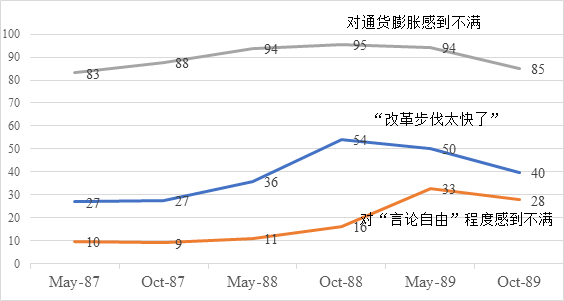
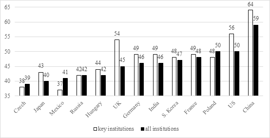
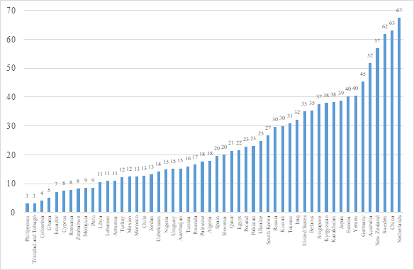
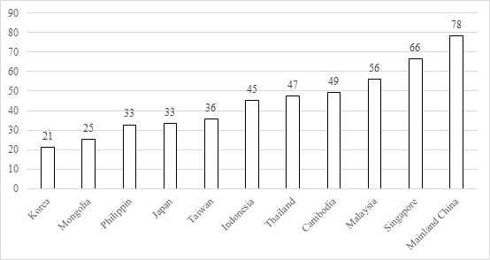
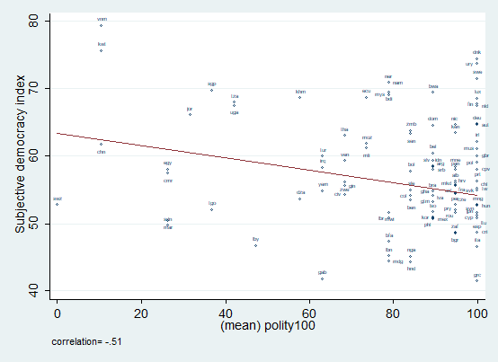

唐文方|民意调查与中国政权韧性的五大“意外”发现（译文全文）
收录于合集
以下文章来源于人民大学国政评论 ，作者人民大学国政评论
人民大学国政评论 .
中国人民大学国际关系学院学术交流平台
作者简介： 唐文方，美国爱荷华大学（University of Iowa）政治学与国际问题研究斯坦利华夏（Stanley Hua Hsia）讲席教授，政治学系主任。
译文来源： [美]唐文方：《民意调查与中国政权韧性的五大“意外”发现》，杨端程译，《中国政治学》第3辑，北京：中国社会科学出版社2019年版，第41-56页。中文译文全文已经唐文方教授审定，并已获得 American Affairs 杂志独家授权。
内容提要： 本文检视了民意调查对研究中国政权韧性的独特贡献，它描述了中国自改革开放以来民意调查研究兴起的历史发展脉络以及这些研究如何揭示一些“意外”并有趣的发现。具而言之，这些发现分别是民众之间彼此存在高度的人际信任，公民政治积极性也很高，政府对民众需求具有高度的回应性以及人民对中国共产党始终表现出高度的拥护和支持等。这些基于民意调查的“意外”发现一反西方主流观点的直觉，因此也在其阵营中引起了相当程度的争议，但是要挑战这些发现只能通过更可靠的经验证据而不能只是出于意识形态的偏见。
关键词： 民意；政权韧性；有争议的政治；人际信任；政治积极性；政府回应性；政治支持
20世纪80年代末到90年代初，随着苏东政权多米诺骨牌式地崩解，西方世界期待中国也随波逐流地走上转型之路。显然，如果中国完成了所谓“民主转型”，那么历史将真正走向福山（Francis Fukuyama）所预言的“终结”。然而30年过去了，历史非但没有终结，中国反而迎来了再兴。虽然没有人能肯定中国政权将会持续多长时间，但是，至今也没有迹象显示中国会在任何时间发生“崩溃”。由此，从事中国研究的海外学者们已经不再预测中国将会何时发生“民主转型”，转而去研究为什么中国政权在民主化浪潮中展现出如此强劲的韧性。尽管还有许多人认为中国将会转变为西式民主国家，但是我将在这篇文章中回答在过去的30年间，中国的政治体制为什么没有向西式“自由民主”转型。尽管之前业已有许多尝试回答中国政权韧性的解释，比如“精英之间的权力分享”说、“儒家贤能政治”说以及“机构的碎片化”说，等等。但是在这篇文章中，我将从另外一个重要维度——当代中国的民意与民众的政治支持来加以阐述。因为，在过去的30年间，日臻发展的民意研究为我们描绘了一副与旧有观念截然不同的中国政治生态图。不仅如此，关于中国民意研究的发现不仅挑战了西方民主理论的基本观点，也为近来的中国政治历史研究提供了一个新的视角。
一、 中国民意调查研究的兴起
在过去30年的中国政治研究中，最不寻常的一个变化便是民意调查的兴起。在此之前，中国政治在西方有时被描述为“竹幕背后的拜占庭宫廷政治”。从事中国研究的海外学者或者通过阅读中共中央的机关报——《人民日报》来分析用词的细微变化，或者通过分析官方发布的照片中领导人出现的不同顺序（这象征着政治精英权力微妙的调整和重组）来分析中国的政策走向和人事变动。即使到今天，对精英政治进行分析依然是中国政治研究中的重要组成部分。
但是随着中国改革开放的推进，政府官员与学者们开始意识到通过科学手段搜集民意数据的重要性。在1987年5月，国家经济体制改革委员会（以下简称“体改委”）下设的中国社会调查系统第一次在全国城市居民中进行抽样调查。当时，体改委是时任国务院总理亲自主导设立的智库，承当时中央主要领导人之命，通过一年两次的社会调查来监测从计划经济向市场经济转轨过程中公众心态的变动以及他们对市场化改革可能造成的负面影响的承受能力。
当时体改委下设的中国社会调查系统的负责人杨冠三，是一位兼具学者与官员身份的优秀经济学家，他是在“文革”后恢复高考时第一批考取大学的77级学生。在他的领导下，中国社会调查系统分别在1987、1988和1989年的5月到10月间进行了6次城市调查。通过对调查数据的分析，杨冠三注意到了在民众中间迅速升起的对通货膨胀、失业、社会风气以及政府低效的不满情绪。
随后，在1991年和1992年2年间，杨冠三又主持了两次以上的调查，其中1992年的调查因为采用了与美国综合社会调查（General Social Survey）中许多题目类似的设计，使得中国数据第一次具有了与其他社会进行系统比较的可行性，因而显得格外重要。在1992年邓小平南巡讲话确定中国将在防止资产阶级自由化的同时继续推进市场经济改革后，杨冠三便放弃了政治与学术事业，同时也拒绝了美国对他作为访问学者的邀请而转投商海，最终成为一名成功的期货商。
到了20世纪90年代中期，民意调查在中国国内再度兴起。其中，站在政治科学调查研究第一线的是沈明明。在密歇根大学拿到政治学博士后，沈明明回到了北京大学并在90年代中期开始担任中国国情研究中心的领导工作。从那以后，北大国情中心与许多国际学者开展合作，做了大量的全国性与跨国性的调查，像1999年的中国城市调查（Chinese Urban Survey）、2004年的法治调查（Legal Survey）、2008年的中国调查（China Survey）、第4波、第5波和第6波世界价值观调查（World Value Survey），2013-2015年度城市调查（Urban Survey），以及2018年的中俄反腐败调查等。除此之外，还有许多其它地区性调查和专题调查。
北大国情中心在民意调查研究中的最重要的贡献之一，是沈明明和李磊（Pierre F.Landry）在他们主持的2004年法治调查中率先采用了空间抽样的方法。与传统抽样方法依赖于户口登记，通常存在不全面、不精确以及经常很难获取户籍资料的弱点相比，以GPS为基础的空间抽样可以避免这些缺陷，也能更轻易地追踪到流动人口，特别是对诸如北京、上海、广州和深圳这样拥有30%-50%没有本地户籍的外来人口的大城市而言，显得更为重要。从此以后，空间抽样成为中国抽样调查中具有代表性的标准技术。通过空间抽样所获取的民意调查数据，对日后研究中国的政权韧性具有重要意义。
自20世纪90年代以来，中国国内的调查研究如雨后春笋般的迅速兴起。其中有不少得到中国政府资助的全国性大规模调查，像中山大学主持的中国劳动力动态调查、北京大学主持的中国家庭追踪调查、中国人民大学主持的中国综合社会调查，以及由海外学者主持的独立调查，包括世界价值观调查、亚洲民主动态调查（Asian Barometer Survey）和中国居民收入调查（Chinese Income Inequality Survey）等关于中国内地的调查。除了运用空间抽样的方法外，这些调查在问卷设计上同样借鉴了现有国际性调查中的许多问题。值得指出的是，在当下，就抽样技术、问卷设计以及调查质量保证而言，中国的调查研究可以和世界上任何一国的调查相媲美。这些关于中国的大量调查数据都是公开的，可通过在线申请获得，有些学者已经在使用这些数据，但是还有大量的调查数据尚处于闲置的状态。
二、通过民意调查研究政权韧性的“意外”发现
在中国，民意调查对政权韧性研究有着重要而深远的影响。有时这些调查挑战了学界对于中国政治与社会现实由来已久的认知。因此，接下来我将依次介绍基于中国民意调查数据而得出的五大看似“有悖常理”和具有“挑战性”的发现。
（1）20世纪80年代末经济社会发展过程中出现的一些问题并非西方所谓“民主运动”的先声。 通过对体改委的数据加以分析，我们就能发现一些非常有意思并且出乎意料的现象。在这一时期，民众对通货膨胀、失业下岗、世风日下和政府低效的不满比重迅速达到顶峰（90%以上）。而1988年10月的调查则显示，有54%的城市居民认为，当时市场经济改革在城市中的步伐“太快了”，伴随着通货膨胀的加剧，民众对当时市场经济改革的犹疑情绪也随之上升。与此同时，民众中间对西方自由民主观念的声索从来没有超过全部受访者33%的比例，即便是在上述问题集中浮现出来的时刻。这些结果如图1所示。
** 图1 中国城市居民对市场经济体制改革的反应**

资料来源：体改委调查，1987年5月-1989年10月
统观体改委调查的结果，不难发现，这一时期种种问题引起的社会反映，其实是城市居民对当时市场化改革在城市带来的消极影响的反弹。这一发现描绘了一副与西方媒体报道迥然不同的图景。因为按照西方媒体的报道，20世纪80年代末出现的社会不稳定现象是大多数中国城市居民要求“自由民主”改革的“民主运动”。由于在20世纪90年代早期苏东政权相继垮台，在当时讨论体改委的调查结果并不受到欢迎。然而，中国政权随后表现出来的强劲韧性却证明了体改委调查结果是对当时中国城市居民心理的真切反映。直至今日体改委的调查仍然是解释前述社会现象最好的、也是唯一存在的科学依据。正因为如此，相比媒体基于传闻的报道，人们更应该相信基于概率抽样的调查数据的结果。
（2）高度的政治支持。 在中国民意调查中，一个持续性的发现就是民众始终表现出高度的政治支持。无论调查问题怎么表述，诸如“对中央政府的支持”、“对中国共产党的信任”、“对中央政府领导人的信任”、“对关键政治机构的信任”、“对中国政治体制的支持”、“对中央政府绩效的满意度”或者“对中国人身份的认同”等问题上，受访者都表现出了强烈的支持态度。包括世界价值观调查、亚洲民主动态调查、皮尤调查（Pew Survey）、中国综合社会调查以及中国城市调查在内的由不同机构组织的调查数据也都支持这一结论。
比如，在2000年左右举行的第四波世界价值观调查中，来自不同国家的受访者都被询问了各自对本国政治机构的信任程度。如图2所示，在这些同时包括新兴民主与成熟民主政权的国家中，中国民众对政治机构的信任程度是最高的。
图2 民众对政治机构的信任程度

资料来源: 世界价值观调查，2000年
注：在2000年的世界价值观调查中，受访人被询问了对17个不同机构的信任度，分别为教会、武装力量、教育系统、出版机构、工会、警察、议会、公务员、社会安全系统、电视、政府、政党、大公司、环保组织、妇女组织、健保系统与司法系统。其中，5个关键政治机构分别为议会、公务员、司法体系、警察与军队。每个国家（地区）机构信任的平均得分通过计算每个国家（地区）中17个相关机构和5个关键机构的平均数所得。参见Qing Yang & Wenfang Tang. “Exploring the Sources of InstitutionalTrust in China: Culture, Mobilization, or Performance?” Asian Politics & Policy, Vol. 2, No. 3(2010), pp. 415-436.
（3）人际信任。 在中国民意调查中，第三大“意外”发现是人与人之间高度的信任。在过去20年的调查中，有很多中国受访者持续性地表示“绝大多数人是可信的”。比如，在2012-2014年度开展的第6波世界价值观调查中，有63%的中国受访者赞同“大多数人是可信的”这一说法，仅次于荷兰的67%，在世界范围内高居第二位（见图3）。更为重要的是，这一数据也远高于美国、中国台湾、日本、韩国等实行西式民主制度的国家和地区。因为在这些社会中，只有30%左右的民众相信他人。这一结果与传统的民主理论——“人际信任与社会资本是使民主成功运转起来的前提条件”相悖，似乎是反直觉的，因为阿尔蒙德和维巴(Gabriel A. Almond and Sidney Verba)、帕特南(Robert Putnam)、英格尔哈特（Ronald Inglehart）和福山（Francis Fukuyama）等学者均试图论证社会信任对民主制度的重要性。
诚然，中国人际信任度高这一发现对有些人来说可能相当有争议，这些人可能根本不愿相信这一发现，因为这与他们在中国旅行的见闻、与中国人交谈的经历不相符合。然而，个人有限的经历与大规模的全国调查数据不具可比性，特别是当调查依托有代表性的概率抽样时更是如此。因此，不相信本文所引用的调查数据的人需要拿出更好的证据来挑战本文中的发现。
此外，其他观点则认为人际信任在不同社会中具有不同的意义。因为中国是深受儒家文化影响的社会，所以人际信任意味着对家庭成员的信任，而民主社会中的人际信任则意味着信任陌生人。然而需要指出的是，这一观点并非全对。尽管在中国，信任家庭是理所应当的，但它并不是导致高度的社会信任最重要的原因。相反，以社区（community）为基础的信任才与中国总体社会信任的关系最为密切，而社区信任是以工作单位为基础的社会主义计划经济体制下的产物，虽然计划经济已经不复存在，但它的社会效应仍然在发挥作用。因此，当我们在多元回归中控制了其他因素时，社区信任对政治支持起到了最为积极的作用。也正因为如此，尽管中国不实行西式民主制度，但因为中国拥有大量的社会资本，这使得中国成为当下公民文化与民主理论研究中最为关键的“离值”（outlier）。由此，中国的现实对民主与社会信任的关系提出了根本性的挑战。
图3 “绝大多数人是可以信任的”（赞同百分比）

资料来源：世界价值观调查，2010年-2014年
（4） 政治积极性。 中国民意调查中的第四大“意外”发现是民众高度的政治积极性。比如，根据中山大学在2012年开展的中国劳动力动态调查结果显示，有近一半的雇员表示他们在过去的两年中至少经历一次劳动争议，在2004年的法治调查中，只有6%的受访者表示当他们在卷入劳动争议时会不作为，而剩下的受访者则表示会尝试通过法院诉讼、劳务纠纷调解部门、新闻媒体、互联网曝光、请愿乃至抗议等各种各样的渠道去解决问题。
这些发现与近年来媒体报道中国内地日益增多的群体性事件相一致，尤其是在地方层面。比如，《纽约时报》的报道曾指出，2010年，中国大约发生了18000起群体性事件，而这些群体性事件在1994年大约发生了10000起，这些事件涉及的民众参与规模有小有大，这一现象也说明了给政府提意见的人不再局限于传统意义上为数不多的政府批评者。
最近几年发生在中国地方备受瞩目的事件——比如2008年贵州瓮安一名年轻女孩意外溺亡引发了当地民众对地方政府的抗议，2009年发生在石首市因为一名厨师的非正常死亡而引发的抗议，2011年发生在广东省的“乌坎事件”，2012年发生在什邡市的反对钼铜项目事件，2012年启东市民反对排污项目事件等等，都受到了西方媒体的广泛报道。这些事件引起了中国国内一些“持不同政见者”和一些西方媒体的“极大兴奋”，以至于他们将其描述为所谓的“政治变革的先兆”、“通向民主的里程碑”、或者是“威权政体崩溃的开始”。
诚然，从表面上看，正如传统观念认为，民众的政治抗争是对执政当局的反对，因此，民众的这些政治活动与他们对政府的政治支持似乎是互相矛盾的。然而，令人不可思议的是，中国综合社会调查的数据显示，越信任中央政府的人越倾向于诉诸抗争。换言之，中央政府的支持者和参与地方抗争的民众通常是同一类人。
对此，欧博文（Keven O’Brien）和李连江指出，中国民众在政治参与中采取了聪明的“依法抗争”策略——他们用中央政府“为人民服务”的宗旨来批评和反对地方政府实施的某些政策。根据他们的表述，在这一过程中，这些抗争者也学会了捍卫他们的权利，并且最终将推动“威权制度”的变迁。与之相反的是，童燕齐和雷少华、洛伦岑则认为，在中国共产党群众路线这一根本工作路线的指导下，民众对地方政府的抗议可能会受到中央政府的“默许”，因为中央政府可以据此来测试并发现不受群众欢迎的政策和官员。因此，这些在地方层面爆发的抗议事件反而会强化民众对中央政府的支持和拥护，这一观点似乎更能解释为什么在中国民众的政治抗争与高度的政治支持这两个看似矛盾的现象可以并存。因此，根据第二种观点，民众的抗争活动是构成中国政权韧性不可或缺的内在因素，而不是像欧博文和李连江所谓的那样会导致“威权制度”的变迁。
（5） 政府回应性。 第五大“意外”发现是政府高度的回应性。比如，根据2008年开展的第二波亚洲民主动态调查数据统计结果显示，有78%的中国大陆民众认为政府会对民众的需求进行回应。而在同期的调查中，只有36%的中国台湾地区民众对待这一问题持赞同态度。此外，如图4所示，在移植西方自由民主制度的其他东亚国家中，民众对政府的回应程度感知更低，在日本和菲律宾只有33%，在蒙古则为25%，韩国排名垫底，只有21%。
在多元回归分析中，当我们考虑年龄、受教育程度、性别、收入、宗教信仰和地理分布时，也可发现政府回应性在提高中国民众的政治支持度中发挥了最为重要的作用。既有的经典研究将中国民众高度的政治支持归功于三大要素：经济增长、媒体控制与文化价值观。这些研究指出，中国民众对政府感到满意是因为国家经济的快速增长，由此改善了他们的生活；又因为政府对民众的有效宣传；或者因为中国的儒家文化价值观使人们服从政治等级并且避免挑战权威。然而，当我们将这三类解释变量与政府回应性一并放入同一回归模型中时，虽然这三个理论都在不同程度上得到验证，但是政府回应性依然对促进民众对政权的支持产生了最为显著的影响。
图4 “我们的政府能回应民众的需求” （赞同百分比）

资料来源：第二波亚洲民主动态调查，2008
三、政权韧性与民主理论
过去30年来，在中国以民意调查为基础的“信息爆炸”冲击了政治科学中得一些经典理论。这些经典理论源于西方，但其依靠的一手证据却也有限。比如，经典的公民文化理论只是基于对5个国家——美国、英国、联邦德国、意大利和墨西哥调查而得出的。然而，今天世界价值观调查的范围却覆盖了所有有人居住的大洲上的近80个国家和地区。
在这些国家中，中国作为一个“离值”，在各个方面都会冲击西方政治科学中的理论预测。正如前文提及的这些“意外”现象：第一，20世纪80年代末的社会现象并非所谓民主化的先兆，而是民众对改革过程中暴露出一些社会问题不满情绪的流露；第二，尽管中国政权经常被认为即将“崩溃”，但其却拥有民众坚定的政治支持；第三，尽管学界认为威权制度使得民众之间普遍不信任，但是中国的社会资本在世界范围内却是最高的之一；第四，与民主理论预测相反的是，中国的“威权”政府表现出了相当高的回应性；第五，与“中国民众普遍政治冷漠“这一西方传统看法相反，中国民众表现出了强烈的政治积极性和政治效能感。
不仅如此，在当前的政治科学研究中，还存在对民主概念进行非黑即白的二元划分这一问题。比如，西方所谓的权威机构“政体4”（Polity IV）和“自由之家”（Freedom House）对民主和自由的排名均受到西方政治学的高度重视并且被广泛用于政治科学的教学与研究中。根据这两家机构对世界各国和地区自由和民主的得分排序，中国从来都是排名垫底的。但是根据2012年世界价值观调查的数据来看，有超过60%的中国受访者认为他们是自由的，这一结果甚至比许多民主国家都高。诚然，中国民众的期望可能并不过高，但是他们确实在主观上感到自由并且这种感知也相当重要，因为公民的不幸福会导致政治上的不信任甚至社会的不稳定。
此外，西方政治学者在测量民主和自由上出现偏误的问题不仅仅局限于中国。事实上，当将民意调查中的主观感知与“政体4”和“自由之家”对民主与自由的“客观”评价排名相比较时，不难发现世界范围内的民意调查结果显示，民众对自由民主的主观感受与“客观”民主指标之间呈负相关关系。图5便清楚地表明，以覆盖70多个国家和地区的全球民主动态调查（2010-2015）为依托、从主观角度测量民主和从“客观”角度出发测量民主之间存在负相关关系。在这些调查中，受访者分别被询问了以下6个与他们社会中主观民主认知高度相关的问题：（1）我国的民主程度很高；（2）我国的民主制度运作很好；（3）我国的普通民众能自由表达观点；（4）我信任我国的媒体；（5）我们的政府会回应民众的需求；（6）我对我们政府的表现感到满意。
这6道题目共同构成了测量主观民主的一个指标。正如图5所示，当将这些指标与政体4中同一国家和地区的“客观”民主得分指数进行比较时，在统计意义上可以认为他们之间存在显著的负相关关系，其相关系数竟然达到-0.51！换言之，生活在“民主社会”中的公民反而比生活在所谓“威权社会”中的民众感受到更少的民主与自由。
图5 主观民主感知与“客观”民主指数的相关性

资料来源：全球民主动态调查（2010-2015）与民主政体评分
解决主观与“客观”测量之间不一致的一个办法就是对现有政治科学文献中的概念进行适当延伸（concept stretching）。当然，对概念进行延伸可能会削弱理论的解释力，因为概念越宽泛，适用的范围越广，解释力就越弱，但是过度严格的定义也限制了政治分析的范围和效度。 例如，如果把政治参与只定义为投票行为，那么没有选举的社会哪怕有高度的政治抗争，也只能算是没有政治参与。因此， 既有的民意调查可以拓宽（或者丰富）政治科学中的一些核心概念，比如，针对威权政治的研究可以进一步包括对精英与大众、正式与非正式政治的分析；社会资本可以进一步囊括以西方为代表的公民信任（信任陌生人）和在中国以社区为基础的人际信任。 更重要的是， 对民主、自由、政府回应性与政治合法性等概念的定义，不仅需要西方学者和精英们基于西方民主制度设计所制定的“客观”指标，也需要纳入老百姓对这些指标和概念的主观感知和体验。如果只关注所谓民主的制度设计但忽视民众对民主观念的认知，那么政治学研究充其量不过是政治精英的臆想，会与现实世界脱离。
最后，理解中国政权韧性的另一个障碍在于西方在意识形态上的一贯偏见。 中国以外的研究者想当然地认为中国的学术研究受到意识形态的制约，一些西方的媒体和学者也经常戴上有色眼镜来看待中国，这些带有意识形态偏见的观点认为，中国的“威权”政治制度本来就是不好的，民众支持这样的政治制度也是不健康的，只有基于对陌生人的公民信任才是人际信任与社会资本的唯一来源，高度的政府回应性也只是源于中国公民期望的“极度低下”，等等。显然， 这些价值判断妨碍了研究者去真正理解在中国政治体系中影响中国政权韧性的要素有哪些、这些要素之间的关系如何以及它们又是如何发挥作用的。而真正客观中立的研究态度，则要求研究者尽量避免先入为主地给出“好”与“坏”的价值判断，而更多地关注什么是可行的，什么是不可行的。
编辑：吴温泉